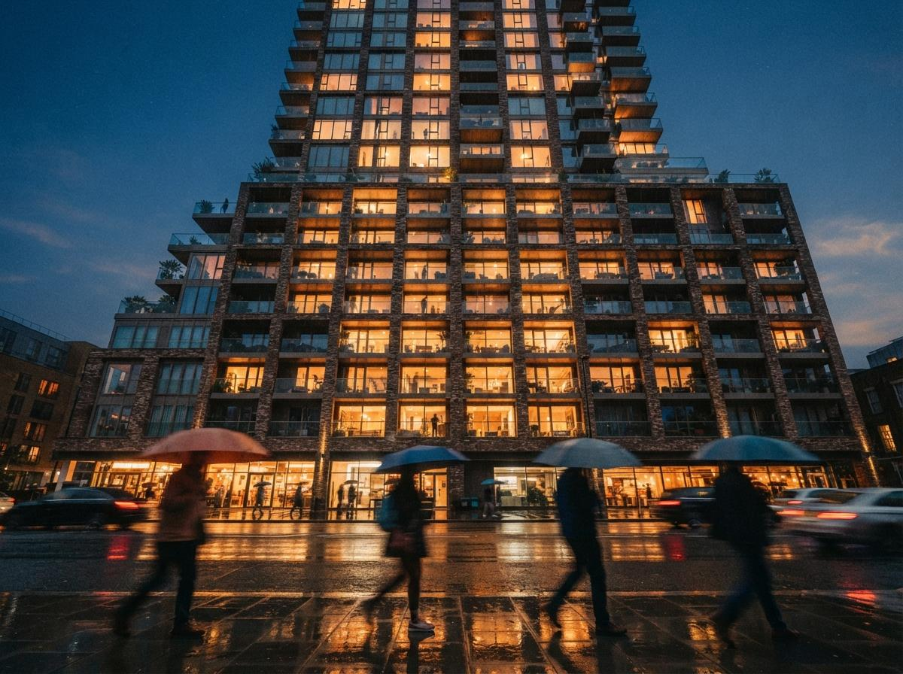
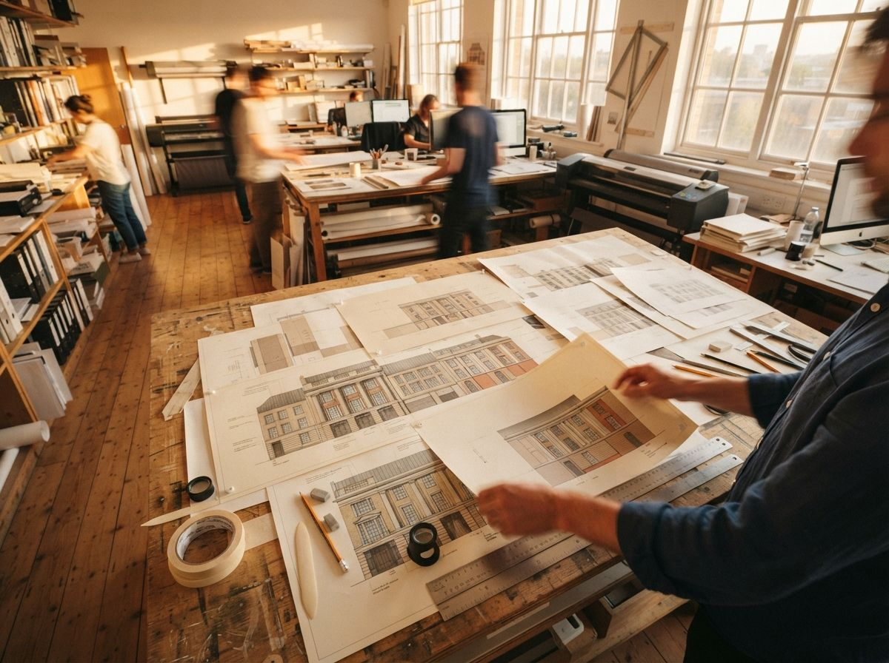

Two of the busiest community threads this week were the same question worded twice: how do I take a Flux or ComfyUI architecture render up to 4K, and why does it keep breaking when I try. One was a beginner asking about image-to-image at 4K for renders, the other a longer workflow thread on enhancing exterior images with reflections, vegetation, and material detail. Both run into the same wall, and it is worth understanding the wall before reaching for a node.
The short version: a diffusion model is not an enlarger. It is a generator with a comfortable working size, and architecture is the worst possible subject to push past that size carelessly, because architecture is made of the two things these models are weakest at, repeating elements and dead straight lines.
Why one pass cannot give you 4K
Every diffusion model has a resolution it was trained around. For the SDXL generation that was roughly a megapixel, near 1024 pixels square. The Flux models work comfortably higher, into the one-to-two megapixel range, which is part of why they took over archviz pipelines this year. But none of them were trained to compose a single coherent image at 3840 pixels wide. Ask for that in one shot and the model fills the unfamiliar canvas the only way it knows, by tiling its own training patterns. On a portrait it adds a second nose. On a facade it adds a second row of windows, because it has no model of "this building has exactly nine bays" and every reason to think more windows means more building.
So the rule is simple and it does not change between tools. Generate the composition at the resolution the model is good at, where the bay count is right and the massing reads true, and treat reaching 4K as a separate problem solved by a separate pass. Get the picture right small. Make it big second. Never ask one render to do both.

The move: upscale in tiles, not in one shot
The working method is tiled image-to-image. You take your good base render, enlarge it with a conventional upscaler first so the pixels exist, then run diffusion back over it in overlapping tiles, refining each patch at a size the model can actually handle. The whole image never goes through the model at 4K. A 768 or 1024 pixel tile does, many times, and the tiles are stitched with overlap so the grain stays consistent. In ComfyUI this is the Ultimate SD Upscale node or a tiled-diffusion setup. The Flux ecosystem has its own tile and upscale controls, and the one-click enhancers wrap exactly this process behind a slider.
That alone fixes the duplicate-window problem, because no single tile ever sees enough of the building to decide it needs more of it. Each tile only sharpens the patch in front of it. But tiling introduces its own two risks, and both are decided by settings most people never touch.
The denoise dial decides everything
Denoise strength is how much licence each tile gets to change what it sees. This is the single setting that separates a clean upscale from a quietly redesigned building. Set it high, above 0.45 or so, and every tile treats its patch as an invitation to improve, so a mullion shifts here, a transom appears there, and across a tile boundary two halves of the same window no longer agree. Set it low, around 0.2 to 0.35 for architecture, and the model adds grain, sharpens reflections, and resolves material texture without rewriting the structure underneath. Low denoise is not the timid choice. It is the correct one for any image where the geometry has to survive.
Lock the structure with control
Low denoise alone still drifts on long runs of brick and glass. The fix is a control input that pins each tile to the source. A tile-type ControlNet, fed the base image, tells every patch to stay faithful to what was already there, which is exactly what you want when the answer is "more detail, same building." For edges specifically, a lineart or depth control holds the straight lines that diffusion loves to bend. Flux has its own depth and edge tools that do the same job. Stack a tile control with low denoise and the upscale becomes what the client thinks a render already is, the same image with more truth in it, not a remix.
The failures that are specific to buildings
Portraits forgive a lot. Buildings do not, and three failure modes show up again and again once you start pushing resolution.
| What goes wrong | The cause | The fix |
|---|---|---|
| Extra windows or balconies | One-pass generation at oversize resolution | Compose at native res, upscale separately in tiles. |
| Wavy straight lines, rippling brick | High denoise, no edge control | Drop denoise to ~0.3, add lineart or depth control. |
| Mismatched detail across the image | Tiles refined with too much freedom | Tile-type ControlNet plus tile overlap and a fixed seed. |
The third one is the giveaway that an image was machine-enlarged without care, and it is the one clients notice without knowing why. Detail that is sharp in one corner and soft in another, brick that is convincing on the left return and mushy on the right, reads as cheap even to someone who could not name the problem. Overlapping tiles and a single fixed seed across the run keep the texture telling one story instead of forty.

A pass order that holds up
None of this is hard once the order is right. The mistake is treating upscaling as a rescue for a render that was never right to begin with. Upscaling amplifies whatever is in the image, including the lies, so a hallucinated corner only gets a sharper, more convincing hallucinated corner. Fix the building first, then make it big.
- Get the base render correct. Right bay count, right massing, geometry you would sign off, at the model's native resolution. Nothing downstream improves a wrong base.
- Upscale the pixels conventionally. A standard image upscaler brings the file up to target size so the tiles have something to work on.
- Refine in overlapping tiles at low denoise. Around 0.3, with a tile control fed from the base, so each patch sharpens without redesigning.
- Hold the edges. Add lineart or depth control where straight runs of facade need to stay straight.
- Check it against the model. Before it leaves the studio, confirm the 4K still matches the building you designed, the same discipline we set out in the geometry check.
That last step is not optional, because a 4K image is the one most likely to go to print, to a wall, or to a planner, and the resolution that makes it impressive is the same resolution that makes a mistake unmissable. We wrote the full checking routine in the geometry hallucination QA checklist, and the upscale pass is exactly where you run it.
Our take: resolution is the last step, not the first
The reason these threads keep filling up is that 4K feels like a setting you should be able to type in, and the tools encourage that belief by putting a resolution box right next to the prompt. It is not a setting. It is a second craft that sits on top of a finished image, and the firms producing clean print-scale renders are not the ones who found a magic upscaler. They are the ones who stopped asking a single pass to do two jobs.
If your work is mostly client stills at screen size, the one-click enhancers handle this well enough and the manual pipeline is overkill, a trade we weighed in the enhancer versus ComfyUI pipeline comparison. The moment the deliverable is a hero at print size, or anything where a doubled window ends up on a boardroom wall, the tiled pass with low denoise and a structure control is the difference between a render and an enlarged guess.
An upscaler cannot fix a building. It can only make whatever is already there harder to argue with.
So compose small, where the model is honest. Enlarge in tiles, where it cannot get ambitious. Keep the denoise low and the edges pinned, and check the result against the thing you actually designed. Do that and 4K stops being the step where the render falls apart, and becomes the step where it finally looks like the building.
Drawn from this week's intel sweep of 2026 architectural visualization coverage, where community threads on r/StableDiffusion and r/FluxAI returned repeatedly to the same problem: taking Flux and ComfyUI architecture renders up to 4K with image-to-image, and the duplication and edge artifacts that follow. ArchiGen AI runs no sponsored placements and has no affiliate relationship with any tool named here.